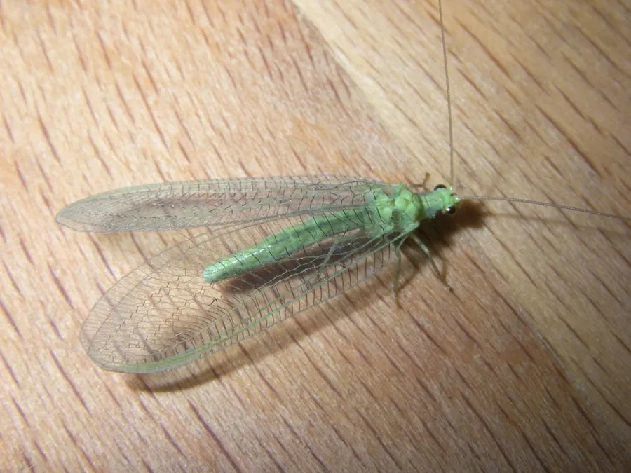

昆虫 · 动物界
草蛉幼虫 Chrysopa pallens

通称蚜狮的草蛉幼虫，体侧长有毛瘤，用镰刀状大颚夹住蚜虫吸食体液，是农田与果园里凶猛的捕食者。
- 分类
- 门节肢动物门纲昆虫纲目脉翅目科草蛉科属草蛉属
- 栖息环境
- 农田、果园、菜地、花木与灌木叶片上
- 地理分布
- 中国南北各地及东亚、欧洲的温带地区
- 保护级别
- 常见天敌昆虫，无保护需求，被人工繁育利用
物种志
草蛉幼虫体长约一厘米，体纺锤形，灰褐至黄褐色，两侧长有突起的毛瘤，行动时常把蜕皮和杂物背在背上伪装自己，看上去像一小团会走路的垃圾。头部有一对镰刀状大颚，大颚内侧中空，像吸管一样把猎物汁液吸进嘴里。它没有翅，靠六足在叶面疾走，遇到蚜虫便猛地夹住高高举起。
它的成虫就是常见的草蛉，体绿色，翅脉网状，多在夜间活动。中国南北各地常见的 Chrysopa pallens 为大草蛉，幼虫在农田、果园、菜地和花木上捕食蚜虫、叶螨、粉虱和鳞翅目卵，一头幼虫整个发育期能吃掉几百只蚜虫。化蛹前它吐丝结一个圆形小白茧，挂在叶背。由于捕食量大，草蛉被大量人工繁育用于生物防治，是绿色农业的重要天敌。
形态与习性
- 体长幼虫约一厘米，纺锤形
- 外形体侧有毛瘤，常背负杂物伪装
- 口器镰刀状大颚，中空如吸管
- 食性捕食蚜虫、叶螨、粉虱与虫卵
- 捕食量一头幼虫可吃数百只蚜虫
- 化蛹吐丝结白色圆形小茧于叶背
趣味知识
- 它把蜕皮和碎屑背在背上当伪装，走近了才发现那团垃圾在动。
- 它的大颚像两把空心镰刀，夹住蚜虫就直接吸干。
- 一头蚜狮从孵化到化蛹能吃掉几百只蚜虫，是果园里的免费劳工。